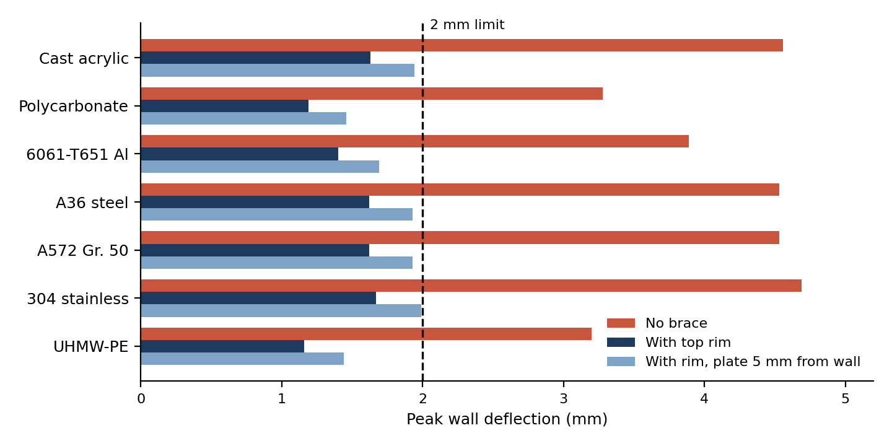
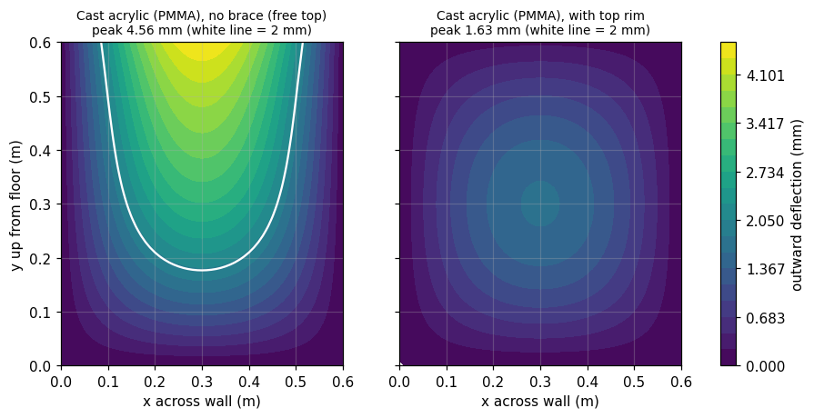
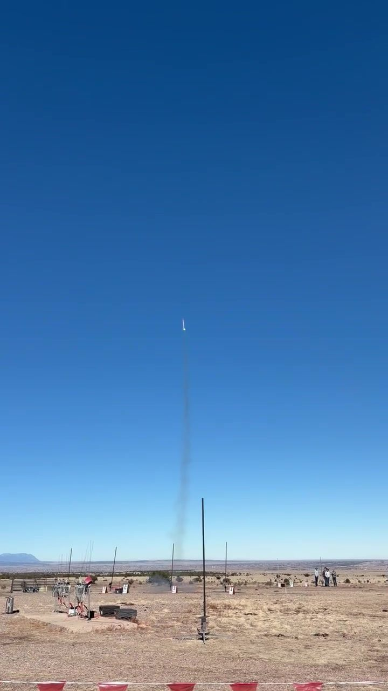
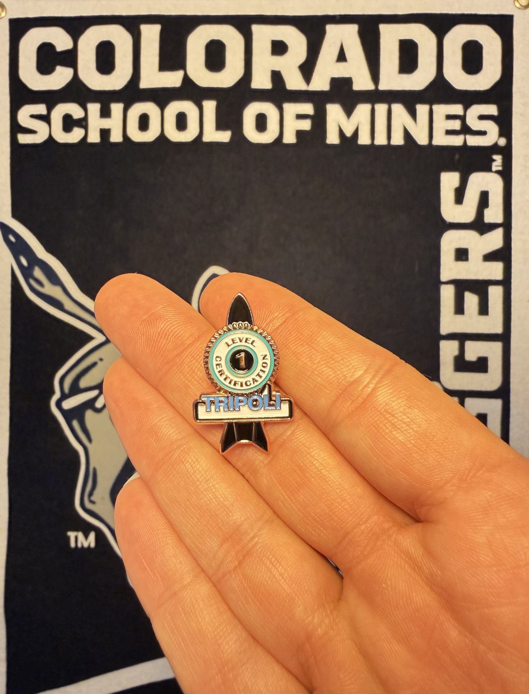
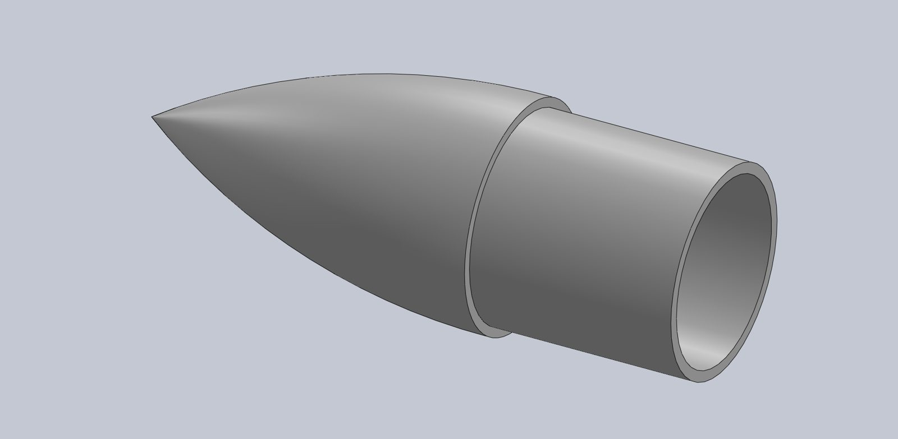
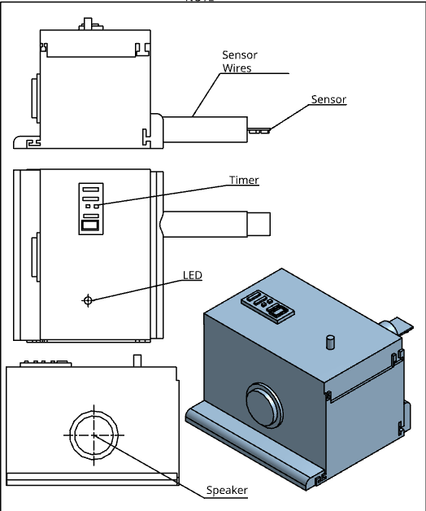
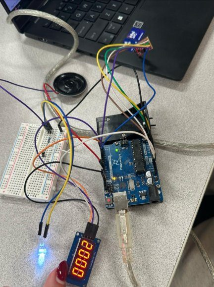

Lunar regolith testbed
RoSE Lab, Bevameter project · Subsystem lead · Aug 2026 to present
A 60 cm benchtop bin that holds compacted lunar soil simulant while a bevameter drives test plates into it. I own the design, analysis, fabrication, test procedures and assembly, and presented the design at the team's Critical Design Review.
- Bounding load on the frame
- 18 kN
- Wall materials within the 2 mm deflection limit
- 0 of 7, then 7 of 7 with my top rim
- Selected build
- 6061 aluminum walls, acrylic viewing window, aluminum T-slot frame
The key finding: an open-top bin needs a stiff rim
I modeled the compacted soil's pressure on the walls and sized each wall as a flat plate. With the top edge free, every candidate material bowed past the limit. A 2 × 2 × ¼ in aluminum tube rim braces that edge and brings all seven under it, even with the test plate driven 5 mm from a wall.


The work behind it: a soil-stress and earth-pressure model, a load path through the actuator, mounts and fasteners including the off-center plate case, plate-bending sizing of seven materials, and weighted decision matrices for walls, frame and compaction. All of it is documented in a Python notebook the team uses as its reference.
Level 1 high-power rocket
Mines Rocket Club · Designer and builder · Spring 2026
I designed the rocket in OpenRocket, modeled and 3D-printed its nose cone, laser-cut the fins and built the full vehicle on a tight launch timeline. It flew on an AeroTech H motor with a clean parachute recovery and earned my Tripoli Level 1 high-power certification.
- Vehicle
- 83 mm diameter, about 1 m tall, 38 mm motor mount
- Simulated flight, AeroTech H219T
- 649 m (2,128 ft) apogee, Mach 0.49
- Recovery
- 36 in parachute, about 6 m/s landing



Tourniquet feedback device
Red Rocks Community College · Team lead, 5 students · Spring 2025
Most tourniquet failures happen because the user can't tell when it is tight enough. Our clip-on device reads blood flow below the tourniquet and, once flow stops, lights an LED, sounds an alarm and starts a timer for the next level of care.
I led the team and the stakeholder work with EMS and military medics, fabricated about 75% of the hardware and wrote about 25% of the software.
- Validation tests
- 8 of 8 subjects classified correctly
- Civilian confidence in tourniquet placement
- More than doubled with the device
- Hardware
- Pulse-oximeter sensor, Arduino, LED, speaker, timer, 3D-printed enclosure

